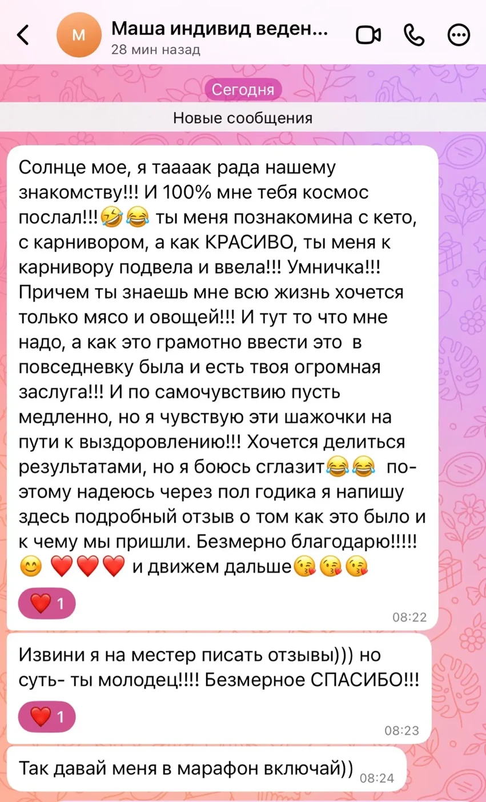

О личном сопровождении

🎁 ОСВОБОДИЛОСЬ ОДНО МЕСТО НА ИНДИВИДУАЛЬНОЕ СОПРОВОЖДЕНИЕ!
Друзья, у меня отличная новость и место, которое только что освободилось.
Мы работали 30 дней напролёт с Машей. Начинали с нуля — со смешанного питания. Маша до этого вообще не была знакома с низкоуглеводным питанием, а тем более с карнивором.
И спустя всего 30 дней она полностью во всём разобралась! Настолько, что решила отправиться в самостоятельное плавание, но под моим присмотром в роли наставника.
Вот это и есть настоящий результат индивидуальной работы — когда человек не просто слепо следует меню, а понимает своё тело, знает, что и зачем он делает, и может двигаться дальше сам.
Хотите так же? Место освободилось, и я готова взять нового человека под своё крыло.
ИНДИВИДУАЛЬНОЕ СОПРОВОЖДЕНИЕ «ХИЩНЫЙ ПУТЬ»
Если вам нужен не просто разбор, а персональный план действий — я готова помочь.
Я не даю шаблонов. Я даю путь, который прошла сама.
🦁 ПОЧЕМУ Я?
Опыт. Я на кето с 2023 года, на карниворе — с 2024. Минус 47 кг. Удерживаю вес три года. Без срывов и возвратов. Вылечила предраковое состояние лечебным протоколом карнивор-питания.
Знания. Прошла путь от «ПП и ЗОЖ» до палео-карнивора. Знаю все виды низкоуглеводного питания изнутри (и низкожирового «ПП» тоже). Знаю, как питание влияет на различные состояния. Провожу групповые марафоны, составляю индивидуальные меню и веду людей лично.
Результат. Не только вес. Кожа, волосы, суставы, энергия, сон, метаболизм. Всё тело.
💎 ЧТО ВЫ ПОЛУЧАЕТЕ (30 дней):
· Ознакомление с вашими анализами на постоянной основе для составления и коррекции плана питания и подбора БАДов под задачи (без медицинских назначений). Объяснение анализов простым языком: что можно улучшить питанием и образом жизни.
· Составление подробного плана питания под ваши возможности, цели и даже капризы. Ежедневная коррекция при необходимости.
· Личное сопровождение каждый день. Я на связи.
· Стоимость: 21 500 ₽ / мес.
🤝 ЧТО ЭТО ДАЁТ:
· Полное сопровождение. Вы не одна(не один). Я рядом каждый день. Огромный опыт работы с людьми по питанию и образу жизни.
· Индивидуальный подход. Мой взгляд на ваши анализы и БАДы.
· Нагрузки. Подбираю под ваш уровень и состояние.
· Поддержка. Отвечаю на вопросы, помогаю на плато, разбираю срывы.
И главное — результат:
Уходит вес, если есть лишний вес (но это не главное). Восстанавливается метаболическое здоровье. Кожа, волосы, ногти, суставы. Энергия и ясность. Понимание своего тела.
⚠️ ВАЖНО:
У меня уже были и есть люди на индивидуальном ведении. 100% благодарных отзывов. Превосходные результаты у всех.
Я не ставлю диагнозы и не отменяю лекарства. Я — консультант по образу жизни. Вы сами принимаете решения о своём теле. Но я знаю как. И проведу вас.
Работаю удалённо. Возможны выезды для закупок или работа на дому у заказчика (в Москве) — в таком случае стоимость обсуждается индивидуально.
Пишите в личку. Место всего одно. Я разберу вашу ситуацию, и мы начнём работать. 🦁
Мои контакты:
Taplink 👉 https://taplink.cc/carnivorelife
MAX 👉 https://max.ru/id503410262979_biz
Telegram 👉 https://t.me/mycarnivorelife
ВК 👉 https://vk.ru/carnivorelife
Дзен 👉 https://dzen.ru/carnivorelife
#наставник #сопровождение #карнивор #кето #похудение #дневникхищницы
https://taplink.cc/carnivorelifehttps://max.ru/id503410262979_bizhttps://t.me/mycarnivorelifehttps://vk.ru/carnivorelifehttps://dzen.ru/carnivorelife